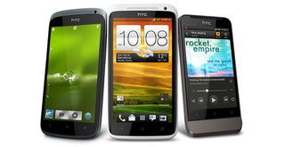

HTC One X. Toma nota de este nombre porque, si el mercado le corresponde, el Samsung Galaxy SII ya tiene sucesor como teléfono referencia en el mundo Android. Al menos lo será durante unos meses y siempre que la diagonal de 4.7 pulgadas te convenza, que no es mi caso. Yo los prefiero un poco más comedidos en ese apartado técnico. Tras la prueba a la que hemos sometido en Xataka al HTC One X, ya os puedo adelantar que estamos ante uno de los teléfonos más completos que han pasado por mis manos. ¿No sientes curiosidad por conocer por qué opino así? La solución está en este completo análisis del HTC One X.
HTC One X, el resurgir de la compañía HTC pasó un mal año 2011. Con el Samsung Galaxy SII convertido en el teléfono más conocido de los smartphone Android, sus modelos no acabaron de dejar huella entre los consumidores. Con un mercado tan saturado, tener un modelo de referencia es un objetivo común de todas las marcas. Apple lo tiene sencillo pues solo tiene uno. Samsung sobra decir que ha colocado el apellido Galaxy S en la historia de la telefonía. Así, tanto el iPhone 4S como el Galaxy SII son modelos reconocibles incluso por encima de su marca madre. HTC necesitaba algo similar. Y la compañía tenía claro que este 2012 debía ser el año de su resurgir. Y vaya si lo ha conseguido. Lo ha hecho además no con un solo teléfono sino con una saga, la One, nombre sencillo de recordar, sin aspavientos y, más importante, fácilmente reconocible por el consumidor. El HTC One X es el más destacado de esa gama que se estrenó en el pasado MWC de Barcelona, y tras analizarlo a fondo, ya os puedo asegurar que han conseguido su objetivo: ser el teléfono franquicia de la compañía y uno de los referentes en equipos Android. Sí, con el One X, HTC ha regresado definitivamente a la élite de la telefonía móvil. La única duda que me queda es si le acompañarán las ventas ahora que el precio libre es más determinante que nunca. Videoanálisis Como este tipo de terminales y gadgets se ven mucho mejor en movimiento, os dejamos para abrir boca con el videoanálisis del HTC One X: Diseño No puede haber teléfono franquicia sin un diseño que lo identifique. Sin perder el aroma a HTC, el One X ha conseguido que el suyo sea un valor seguro y parte de su éxito. El HTC One X tiene un acabado en policarbonato de gran calidad, con un poco de textura en la parte trasera, diseño de una sola pieza (unibody), ligeramente curvado y muy agradable de tener en la mano. En color blanco se ve espectacular, pero la unidad que nosotros hemos analizado se conforma con un acabado gris oscuro que también engancha. Con grandes dimensiones, el HTC One reduce los botones físicos al mínimo. Como la batería es interna, no hacía falta diseñar una tapa para la parte trasera, en la que solo encontramos el logo incrustado de HTC y la cámara de fotos. En la parte superior encontramos la ranura para la tarjeta microSIM (no busques la de la microSD porque no la hay), el micrófono para el sistema de reducción de ruido en las llamadas, y el botón de encendido en la parte derecha. Ya en el lateral derecho está el control de volumen, de tamaño ideal, con el tacto adecuado, del que solo podemos decir que está, que funciona, pero que no se nota. Como debe ser. En la parte izquierda queda en solitario la ranura microUSB que está preparada para la salida de vídeo y función MHL. En el apartado de controles físicos solo echamos de menos un botón fotográfico dedicado. Con lo bien pensado que está este terminal en la parte de diseño, seguro que los ingenieros de HTC hubieran encontrado una solución que me habría convencido sin duda. El acabado del HTC One X es muy bueno. El material se nota de calidad y detalles como la zona del auricular o la del altavoz, perforados con precisión de cirujano, nos dan una idea de que todo ha sido cuidadosamente pensado y no se ha dejado nada al azar. Otro ejemplo es la integración de la pantalla en el terminal, con un marco reducido formando parte de la misma, lo que le da mucha sensación de continuidad, al más puro estilo Lumia. Y ya os dije que me encantaba. Quizás lo único que desentona en este diseño minimalista y de muy buen gusto sea la cámara de fotos, que sobresale ligeramente de la carcasa. Esa disposición “externa” también hace que me preocupe cómo quedará la protección de la lente tras un tiempo de uso, pues está a disposición de suciedad, huellas y algún que otro golpe. De la parte del diseño del HTC One X solo nos queda hablar de los botones para Android Ice Cream Sandwich, que no se vuelven virtuales sino que se mantienen de forma acertada (a mi parecer) y formando parte del gran diseño del HTC One X. Si os habéis dado cuenta, no os he hablado de las dimensiones y peso del HTC One X. Cuando tienes este terminal en la mano no importan esos datos, porque el grosor y peso están tan conseguidos que directamente no te los planteas. Tan solo me parece que la diagonal excede lo que para mi es cómodo en un smartphone. Hablando de cifras, HTC ha conseguido que este One X tenga un grosor de solo 8.9 mm y un peso de 130 gramos que en mano parecen incluso menos. Pantalla La pantalla del HTC One X no pasa desapercibida. Y no lo debe hacer porque parte de la experiencia de usuario con un smartphone se sostiene en esa parte del teléfono. Estamos hablando de un terminal que nos ofrece una diagonal que para mi se sale ya de lo cómodo en un teléfono, pero quizás sea que no tengo las manos suficientemente grandes. Ni el bolsillo del pantalón. Con datos fríos, la pantalla del HTC One X es de 4.7 pulgadas. Pero no está en esa diagonal su secreto. Con esas dimensiones y una resolución de 720p, la pantalla del HTC One X se adentra en el terreno de aquellas en las que hay que ser muy ducho para alcanzar a diferenciar píxeles. En total salen unos 312 ppp que se agradecen mucho especialmente al leer texto. Pero la resolución no es lo único de lo que puede presumir este HTC One X. La calidad de su pantalla va mucho más allá, y en brillo y color no tiene actualmente rival. Los colores que muestra son fieles, con la calidez adecuada y espectaculares. Y estamos hablando de una pantalla de tipo Super LCD (ni rastro de PenTile) que se ha logrado ajustar a un grosor más reducido de lo habitual. Dos aspectos más sobre nuestra prueba con esta pantalla: el ángulo de visión es total, y en exteriores es una pantalla que se ve bastante bien, pero hay que aumentar el brillo al máximo. En la faceta táctil, ninguna pega. Responde con fluidez, y además es una de las pantallas que mejor repele la suciedad y grasa de los dedos. Rendimiento y conectividad Contar con un sistema operativo afinado (Android Ice Cream Sandwich), 1 GB de memoria RAM y un cuádruple núcleo patrocinado por Nvidia (Tegra 3 a 1.5 Ghz) no podía arrojar más que un funcionamiento cómodo y fiable del HTC One X. Ni con juegos que devoran recursos ni con multimedia o tareas diversas se ha inmutado este HTC One X en mis pruebas. Para los amantes de los datos os dejo con la mágica cifra de los test con Quadrant: 4.895 de media. En la faceta comunicativa, la calidad de las llamadas es buena, no he encontrado fallos a reseñar, y el micrófono que se encarga del sistema de reducción de ruído funciona. La conectividad Wifi también ha cumplido con su cometido. Decir también que este HTC One X viene con NFC. Software Con una versión de Android tan pulida ya como Ice Cream Sandwich, las personalizaciones de algunas marcas como HTC o Samsung corren serio peligro de extinción. La única salvación pasaba por sumar en vez de restar. Y eso es justo lo que ha hecho HTC con su nuevo Sense 4.0. Con su aspecto visual tan característico, la personalización Sense ayuda a la sólida base de Android 4.0 y prácticamente en todas las facetas en las que le usurpa la identidad, lo hace muy bien. Tras probarlo a fondo en este HTC One X, un servidor se queda con Sense 4.0 antes que con ICS al natural. La facilidad de personalización de los paneles, los útiles widgets y la barra de acceso directo a modo de dock me han convencido. Por cierto, las cuatro aplicaciones que podemos colocar en esa especie de dock son las cuatro que están accesible directamente desde la pantalla de bloqueo, tan solo arrastrando al círculo de desbloqueo. También la gestión de la multitarea por medio de “cartas” por las que podemos movernos deslizando el dedo y cerrarlas sacándolas de ese desfile nos ha gustado. No así el teclado que viene de serie, así que, como es demasiado habitual (aunque ventaja frente a otros sistemas operativos), toca buscar un teclado alternativo. Yo os recomiendo que le echéis un vistazo al nuevo SwiftKey 3. Un apunte más de forma rápida: con el HTC One X viene de serie la aplicación Dropbox con 25 GB de espacio extra al que ya tuviéramos de forma gratuita durante dos años. Esa ampliación se activa automáticamente al identificarnos en Dropbox desde la aplicación del teléfono. Eso sí, HTC habla de integración de este servicio en su teléfono pero no esperes nada más allá de regalo de espacio: la aplicación es la misma que en otros Android. Capturas de pantalla de la interfaz HTC Sense en el HTC One X (Haz click en una imagen para ampliarla)
Batería Con semejante carta de presentación (cuatro núcleos y pantalla SLCD de 4.7 pulgadas), la prueba de la batería sabía que tenía que ser una de las principales. Y la temía a pesar de la buena capacidad de la misma, de 1.800 mAh. Pero finalmente el HTC One X ha salido bien parado, mucho mejor de lo esperado y en línea del resto de smartphones de gama alta. En nuestro test de autonomía enfocado en el día a día, con correos, llamadas, algún vídeo, fotos, navegación y juego esporádico, el HTC One X aguanta de sobra un día laboral, pasando de las 14 horas desde que lo encendimos con la batería al 100% hasta que murió haciéndonos compañía en el sofá. Si lo sometemos a una tortura mayor, es decir, reproducción de vídeo en alta definición de forma continuada, sin conectividad Wifi y brillo justo a la mitad de intensidad, el HTC One X dijo basta tras casi 6 horas (5.47 para ser exactos) Si encendemos la conectividad y aumentamos el brillo al máximo, haciendo uso de los buenos altavoces integrados, esas casi seis horas se reducen a solo cuatro y unos pocos minutos de agonía. Así que ya sabes, con 4.7 pulgadas, esa autonomía y el sonido Beats (se escucha con bastante potencia controlada usando los altavoces integrados), la reproducción multimedia en una posibilidad. Cámara Pese a que os he comentado que HTC no le ha colocado un botón exclusivo a su función fotográfica, eso no significa que este apartado no se haya cuidado en el HTC One X. De hecho es una de las facetas que publicita especialmente HTC de este terminal. Para que comprendáis lo que ofrece el HTC One X a los amantes de hacer fotografías con un teléfono, hay que hablar de dos facetas diferentes: el software y el hardware. Con el HTC One X podemos hacer fotos mientras grabamos vídeos En el segundo apartado, estamos ante una cámara que se situaría en uno de los escalafones altos de los smartphones Android que han pasado por mis manos. El sensor de 8 megapíxeles de tipo retroiluminado apoyado en una lente con apertura f2.0 da buenos resultados, pero no me parece que sea la cámara que rompe el mercado. Sin embargo, es en el apartado del software donde el HTC One X no tiene ahora mismo rival. El trabajo que la compañía ha hecho es magnífico y de un nivel que ahora mismo ninguna otra marca alcanza, y la combinación con el hardware da como resultado una cámara de fotos acorde con lo que se espera de un terminal de esta gama. Lo primero que notamos al hacer una foto con la cámara del HTC One X es su rapidez. No hablo solo de la toma de fotografía, la más rápida que he probado nunca en un teléfono, sino también en el enfoque. Los datos de HTC son de 0.7 segundos para la toma de fotografías y de 0.2 segundos para el enfoque. El que piense en retrasos interminables al tomar fotos, está pensando en el pasado. Luego pasamos a la interfaz, muy conseguida y con numerosas opciones, entre ellas, los efectos en tiempo real que están a un solo clic de distancia. Lástima que otras opciones como bloquear la exposición no estén integradas todavía. Los filtros podemos aplicarlos en tiempo real y están a un clic de distancia Para rematar la mejora mediante software que HTC ha dado a este One X hay que hablar de la posibilidad de hacer fotos mientras estamos grabando vídeo o incluso cuando lo estamos reproduciendo. En ese momento, además del botón de grabación, disponemos de uno de captura de imagen fija que sigue siendo igual de rápido que en el modo normal y con la misma calidad que si no estuviéramos grabando vídeo, aunque limitada en resolución a la del vídeo. Imagen obtenida desde la reproducción de un vídeo Precisamente ese vídeo, que puede ser de hasta 1080p de calidad, me convence pero tampoco hace que se me salten las lágrimas. Ejemplos de fotos tomadas con el HTC One X (Haz click en una imagen para ampliarla)
La opinión de Xataka El HTC One X ha llegado para quedarse. Es cierto que lo hace en un momento delicado, cuando las operadoras se han replanteado de forma seria el tema de las subvenciones, y por lo tanto, el precio libre de un terminal va a ser mirado con más detenimiento tanto por las propias empresas de telefonía a la hora de ofrecérselas a sus clientes, como por parte del consumidor que quiera adquirirlo de forma libre. Con esta situación, el nombre y fama de una marca resulta crucial. HTC quedó tocada el año pasado pero con terminales como el HTC One X, bien apoyado por el One S, la compañía ha vuelto a ser referente entre los fabricantes de smartphones Android. El HTC One X tiene un acabado estupendo, es ligero, delgado, con una magnífica pantalla (aunque para mi demasiado grande, insisto), pone mucho énfasis en la cámara de fotos y HTC ha realizado un estupendo trabajo en la capa de software tanto en el apartado multimedia como de capa Sense por encima de ICS. Ahora solo le falta convencer al consumidor de que han vuelto en serio. Conmigo lo han hecho. El teléfono ha sido cedido para la prueba por parte de HTC. Puedes consultar nuestra política de relaciones con empresas

HTC One X. Toma nota de este nombre porque, si el mercado le corresponde, el Samsung Galaxy SII ya tiene sucesor como teléfono referencia en el mundo Android. Al menos lo será durante unos meses y siempre que la diagonal de 4.7 pulgadas te convenza, que no es mi caso. Yo los prefiero un poco más comedidos en ese apartado técnico.
Tras la prueba a la que hemos sometido en Xataka al HTC One X, ya os puedo adelantar que estamos ante uno de los teléfonos más completos que han pasado por mis manos. ¿No sientes curiosidad por conocer por qué opino así? La solución está en este completo análisis del HTC One X.
HTC One X, el resurgir de la compañía
HTC pasó un mal año 2011. Con el Samsung Galaxy SII convertido en el teléfono más conocido de los smartphone Android, sus modelos no acabaron de dejar huella entre los consumidores.
Con un mercado tan saturado, tener un modelo de referencia es un objetivo común de todas las marcas. Apple lo tiene sencillo pues solo tiene uno. Samsung sobra decir que ha colocado el apellido Galaxy S en la historia de la telefonía. Así, tanto el iPhone 4S como el Galaxy SII son modelos reconocibles incluso por encima de su marca madre.
HTC necesitaba algo similar. Y la compañía tenía claro que este 2012 debía ser el año de su resurgir. Y vaya si lo ha conseguido.

Lo ha hecho además no con un solo teléfono sino con una saga, la One, nombre sencillo de recordar, sin aspavientos y, más importante, fácilmente reconocible por el consumidor.
El HTC One X es el más destacado de esa gama que se estrenó en el pasado MWC de Barcelona, y tras analizarlo a fondo, ya os puedo asegurar que han conseguido su objetivo: ser el teléfono franquicia de la compañía y uno de los referentes en equipos Android.
Sí, con el One X, HTC ha regresado definitivamente a la élite de la telefonía móvil. La única duda que me queda es si le acompañarán las ventas ahora que el precio libre es más determinante que nunca.
Videoanálisis
Como este tipo de terminales y gadgets se ven mucho mejor en movimiento, os dejamos para abrir boca con el videoanálisis del HTC One X:
Diseño
No puede haber teléfono franquicia sin un diseño que lo identifique. Sin perder el aroma a HTC, el One X ha conseguido que el suyo sea un valor seguro y parte de su éxito.
El HTC One X tiene un acabado en policarbonato de gran calidad, con un poco de textura en la parte trasera, diseño de una sola pieza (unibody), ligeramente curvado y muy agradable de tener en la mano.
En color blanco se ve espectacular, pero la unidad que nosotros hemos analizado se conforma con un acabado gris oscuro que también engancha.

Con grandes dimensiones, el HTC One reduce los botones físicos al mínimo. Como la batería es interna, no hacía falta diseñar una tapa para la parte trasera, en la que solo encontramos el logo incrustado de HTC y la cámara de fotos.
En la parte superior encontramos la ranura para la tarjeta microSIM (no busques la de la microSD porque no la hay), el micrófono para el sistema de reducción de ruido en las llamadas, y el botón de encendido en la parte derecha. Ya en el lateral derecho está el control de volumen, de tamaño ideal, con el tacto adecuado, del que solo podemos decir que está, que funciona, pero que no se nota. Como debe ser.
En la parte izquierda queda en solitario la ranura microUSB que está preparada para la salida de vídeo y función MHL.

En el apartado de controles físicos solo echamos de menos un botón fotográfico dedicado. Con lo bien pensado que está este terminal en la parte de diseño, seguro que los ingenieros de HTC hubieran encontrado una solución que me habría convencido sin duda.
El acabado del HTC One X es muy bueno. El material se nota de calidad y detalles como la zona del auricular o la del altavoz, perforados con precisión de cirujano, nos dan una idea de que todo ha sido cuidadosamente pensado y no se ha dejado nada al azar.

Otro ejemplo es la integración de la pantalla en el terminal, con un marco reducido formando parte de la misma, lo que le da mucha sensación de continuidad, al más puro estilo Lumia. Y ya os dije que me encantaba.
Quizás lo único que desentona en este diseño minimalista y de muy buen gusto sea la cámara de fotos, que sobresale ligeramente de la carcasa. Esa disposición “externa” también hace que me preocupe cómo quedará la protección de la lente tras un tiempo de uso, pues está a disposición de suciedad, huellas y algún que otro golpe.

De la parte del diseño del HTC One X solo nos queda hablar de los botones para Android Ice Cream Sandwich, que no se vuelven virtuales sino que se mantienen de forma acertada (a mi parecer) y formando parte del gran diseño del HTC One X.
Si os habéis dado cuenta, no os he hablado de las dimensiones y peso del HTC One X. Cuando tienes este terminal en la mano no importan esos datos, porque el grosor y peso están tan conseguidos que directamente no te los planteas. Tan solo me parece que la diagonal excede lo que para mi es cómodo en un smartphone.

Hablando de cifras, HTC ha conseguido que este One X tenga un grosor de solo 8.9 mm y un peso de 130 gramos que en mano parecen incluso menos.
Pantalla
La pantalla del HTC One X no pasa desapercibida. Y no lo debe hacer porque parte de la experiencia de usuario con un smartphone se sostiene en esa parte del teléfono. Estamos hablando de un terminal que nos ofrece una diagonal que para mi se sale ya de lo cómodo en un teléfono, pero quizás sea que no tengo las manos suficientemente grandes. Ni el bolsillo del pantalón.
Con datos fríos, la pantalla del HTC One X es de 4.7 pulgadas. Pero no está en esa diagonal su secreto.

Con esas dimensiones y una resolución de 720p, la pantalla del HTC One X se adentra en el terreno de aquellas en las que hay que ser muy ducho para alcanzar a diferenciar píxeles. En total salen unos 312 ppp que se agradecen mucho especialmente al leer texto.
Pero la resolución no es lo único de lo que puede presumir este HTC One X. La calidad de su pantalla va mucho más allá, y en brillo y color no tiene actualmente rival. Los colores que muestra son fieles, con la calidez adecuada y espectaculares. Y estamos hablando de una pantalla de tipo Super LCD (ni rastro de PenTile) que se ha logrado ajustar a un grosor más reducido de lo habitual.
Dos aspectos más sobre nuestra prueba con esta pantalla: el ángulo de visión es total, y en exteriores es una pantalla que se ve bastante bien, pero hay que aumentar el brillo al máximo.

En la faceta táctil, ninguna pega. Responde con fluidez, y además es una de las pantallas que mejor repele la suciedad y grasa de los dedos.
Rendimiento y conectividad

Contar con un sistema operativo afinado (Android Ice Cream Sandwich), 1 GB de memoria RAM y un cuádruple núcleo patrocinado por Nvidia (Tegra 3 a 1.5 Ghz) no podía arrojar más que un funcionamiento cómodo y fiable del HTC One X. Ni con juegos que devoran recursos ni con multimedia o tareas diversas se ha inmutado este HTC One X en mis pruebas.
Para los amantes de los datos os dejo con la mágica cifra de los test con Quadrant: 4.895 de media.
En la faceta comunicativa, la calidad de las llamadas es buena, no he encontrado fallos a reseñar, y el micrófono que se encarga del sistema de reducción de ruído funciona. La conectividad Wifi también ha cumplido con su cometido. Decir también que este HTC One X viene con NFC.
Software
Con una versión de Android tan pulida ya como Ice Cream Sandwich, las personalizaciones de algunas marcas como HTC o Samsung corren serio peligro de extinción. La única salvación pasaba por sumar en vez de restar. Y eso es justo lo que ha hecho HTC con su nuevo Sense 4.0.
Con su aspecto visual tan característico, la personalización Sense ayuda a la sólida base de Android 4.0 y prácticamente en todas las facetas en las que le usurpa la identidad, lo hace muy bien.

Tras probarlo a fondo en este HTC One X, un servidor se queda con Sense 4.0 antes que con ICS al natural. La facilidad de personalización de los paneles, los útiles widgets y la barra de acceso directo a modo de dock me han convencido. Por cierto, las cuatro aplicaciones que podemos colocar en esa especie de dock son las cuatro que están accesible directamente desde la pantalla de bloqueo, tan solo arrastrando al círculo de desbloqueo.

También la gestión de la multitarea por medio de “cartas” por las que podemos movernos deslizando el dedo y cerrarlas sacándolas de ese desfile nos ha gustado. No así el teclado que viene de serie, así que, como es demasiado habitual (aunque ventaja frente a otros sistemas operativos), toca buscar un teclado alternativo. Yo os recomiendo que le echéis un vistazo al nuevo SwiftKey 3.

Un apunte más de forma rápida: con el HTC One X viene de serie la aplicación Dropbox con 25 GB de espacio extra al que ya tuviéramos de forma gratuita durante dos años. Esa ampliación se activa automáticamente al identificarnos en Dropbox desde la aplicación del teléfono. Eso sí, HTC habla de integración de este servicio en su teléfono pero no esperes nada más allá de regalo de espacio: la aplicación es la misma que en otros Android.
Capturas de pantalla de la interfaz HTC Sense en el HTC One X
(Haz click en una imagen para ampliarla)
Batería
Con semejante carta de presentación (cuatro núcleos y pantalla SLCD de 4.7 pulgadas), la prueba de la batería sabía que tenía que ser una de las principales. Y la temía a pesar de la buena capacidad de la misma, de 1.800 mAh. Pero finalmente el HTC One X ha salido bien parado, mucho mejor de lo esperado y en línea del resto de smartphones de gama alta.
En nuestro test de autonomía enfocado en el día a día, con correos, llamadas, algún vídeo, fotos, navegación y juego esporádico, el HTC One X aguanta de sobra un día laboral, pasando de las 14 horas desde que lo encendimos con la batería al 100% hasta que murió haciéndonos compañía en el sofá.

Si lo sometemos a una tortura mayor, es decir, reproducción de vídeo en alta definición de forma continuada, sin conectividad Wifi y brillo justo a la mitad de intensidad, el HTC One X dijo basta tras casi 6 horas (5.47 para ser exactos) Si encendemos la conectividad y aumentamos el brillo al máximo, haciendo uso de los buenos altavoces integrados, esas casi seis horas se reducen a solo cuatro y unos pocos minutos de agonía.
Así que ya sabes, con 4.7 pulgadas, esa autonomía y el sonido Beats (se escucha con bastante potencia controlada usando los altavoces integrados), la reproducción multimedia en una posibilidad.
Cámara
Pese a que os he comentado que HTC no le ha colocado un botón exclusivo a su función fotográfica, eso no significa que este apartado no se haya cuidado en el HTC One X. De hecho es una de las facetas que publicita especialmente HTC de este terminal.
Para que comprendáis lo que ofrece el HTC One X a los amantes de hacer fotografías con un teléfono, hay que hablar de dos facetas diferentes: el software y el hardware.
 Con el HTC One X podemos hacer fotos mientras grabamos vídeos
Con el HTC One X podemos hacer fotos mientras grabamos vídeos En el segundo apartado, estamos ante una cámara que se situaría en uno de los escalafones altos de los smartphones Android que han pasado por mis manos. El sensor de 8 megapíxeles de tipo retroiluminado apoyado en una lente con apertura f2.0 da buenos resultados, pero no me parece que sea la cámara que rompe el mercado.
Sin embargo, es en el apartado del software donde el HTC One X no tiene ahora mismo rival. El trabajo que la compañía ha hecho es magnífico y de un nivel que ahora mismo ninguna otra marca alcanza, y la combinación con el hardware da como resultado una cámara de fotos acorde con lo que se espera de un terminal de esta gama.
Lo primero que notamos al hacer una foto con la cámara del HTC One X es su rapidez. No hablo solo de la toma de fotografía, la más rápida que he probado nunca en un teléfono, sino también en el enfoque. Los datos de HTC son de 0.7 segundos para la toma de fotografías y de 0.2 segundos para el enfoque. El que piense en retrasos interminables al tomar fotos, está pensando en el pasado.
Luego pasamos a la interfaz, muy conseguida y con numerosas opciones, entre ellas, los efectos en tiempo real que están a un solo clic de distancia. Lástima que otras opciones como bloquear la exposición no estén integradas todavía.
 Los filtros podemos aplicarlos en tiempo real y están a un clic de distancia
Los filtros podemos aplicarlos en tiempo real y están a un clic de distancia Para rematar la mejora mediante software que HTC ha dado a este One X hay que hablar de la posibilidad de hacer fotos mientras estamos grabando vídeo o incluso cuando lo estamos reproduciendo. En ese momento, además del botón de grabación, disponemos de uno de captura de imagen fija que sigue siendo igual de rápido que en el modo normal y con la misma calidad que si no estuviéramos grabando vídeo, aunque limitada en resolución a la del vídeo.
Imagen obtenida desde la reproducción de un vídeo
Precisamente ese vídeo, que puede ser de hasta 1080p de calidad, me convence pero tampoco hace que se me salten las lágrimas.
Ejemplos de fotos tomadas con el HTC One X
(Haz click en una imagen para ampliarla)
La opinión de Xataka
El HTC One X ha llegado para quedarse. Es cierto que lo hace en un momento delicado, cuando las operadoras se han replanteado de forma seria el tema de las subvenciones, y por lo tanto, el precio libre de un terminal va a ser mirado con más detenimiento tanto por las propias empresas de telefonía a la hora de ofrecérselas a sus clientes, como por parte del consumidor que quiera adquirirlo de forma libre.
Con esta situación, el nombre y fama de una marca resulta crucial. HTC quedó tocada el año pasado pero con terminales como el HTC One X, bien apoyado por el One S, la compañía ha vuelto a ser referente entre los fabricantes de smartphones Android.

El HTC One X tiene un acabado estupendo, es ligero, delgado, con una magnífica pantalla (aunque para mi demasiado grande, insisto), pone mucho énfasis en la cámara de fotos y HTC ha realizado un estupendo trabajo en la capa de software tanto en el apartado multimedia como de capa Sense por encima de ICS. Ahora solo le falta convencer al consumidor de que han vuelto en serio. Conmigo lo han hecho.
El teléfono ha sido cedido para la prueba por parte de HTC. Puedes consultar nuestra política de relaciones con empresas


.jpg)
.jpg)